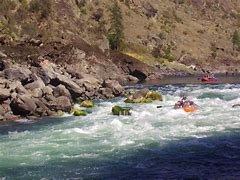

Overview
Come adventure! If you like water or if you like wildlife, then this type of adventure is for you. Explore the adventures of the wild river and seek out the wildlife that you desire to kill. The goal is help young people to saty in shape. As they get older, the bodies will start to develop the "I want to be lazy" type of attitude. Doing outdoors like these will help the body to be more motivated to stay healthy.
If you'e a college student, adult, hunter(with license), or someone who loves outdoors, rafting and/or hunting is the adventure for you. College students, grab a group of friends and come join the adventure. Parents plan a trip for your children. Fathers, plan a hunting trip with your kids. Hunters use rafts to stock a pile of meat to bring home. Give that skin some vitamin D. Do you want to be depressed forever? Is it expensive? What is this, California? Of course not! It is pretty simple! Not 10, not 5, but $2 per person. It is free for those who have a hunting license.
Branding


Style Guide
Color Palette
Palette URL:
https://coolors.co/396e94-e7c24f-a43312-381d2a-aabd8c| Primary | Secondary | Accent 1 | Accent 2 |
|---|---|---|---|
| [#396E94] | [#E7C24F] | [#A43312] | [green] |
Typography
Adventure! Only Ascones stay indoors and sit on their phones!
Explore! The Great unkown awaits for your arrival!
Normal paragraph example
The best Whitewater Rafting in Idaho is at the Salmon River. The Salmon River is located in Salmon, ID in Lemhi county. It is also famous for fishing and populated with mountain goats.
Colored paragraph example
Trips are very exciting and it takes getting group to come out to the great unknown!